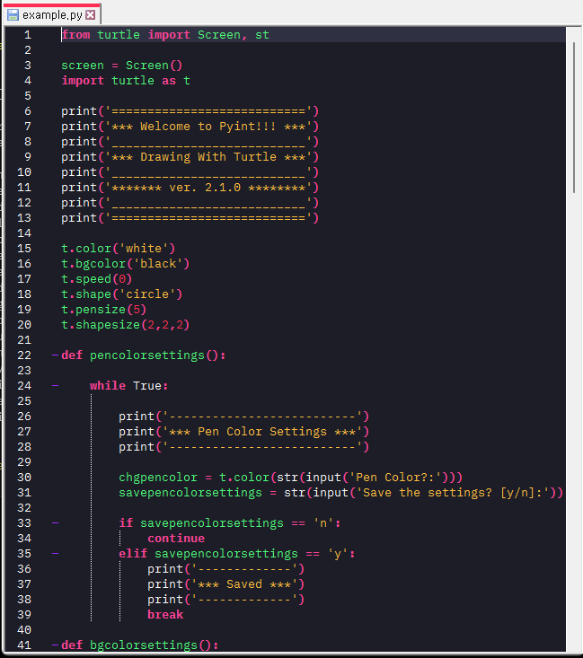

Notepad++

Download
Click here to download .zip file and unzip them
Activating Theme
- Go to %AppData%\Notepad++\themes (%AppData% is platform dependent environment variable. Open a Command Prompt and execute `echo %AppData%`)
- Place 'Monte-Cristo.xml' inside that folder
- Restart Notepad++
- Monte-Cristo will be available in Settings > Style Configurator